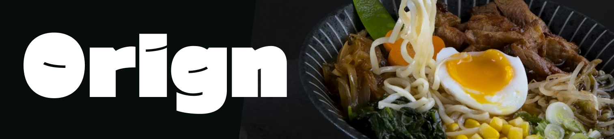

명란 오차즈케 일본에서는 뜨거운 물에 밥을 마는 것을 '유즈케메시(湯ゆ漬づけ飯めし)', 차가운 물에 밥을 마는 것을 '스이한(水すい飯はん)'이라고 부른다. 대한민국에서도 입맛이 없을 때 찬물에 밥을 말아먹는 것(물만밥)을 어렵지 않게 찾아볼 수 있는 것처럼, 물에 밥을 말아먹는 풍습은 쌀밥을 지어 먹는 것과 비슷한 시기에 자연스럽게 발생했다. 이는 밥을 오랫동안 따뜻하게 보관할 방법이 없었던 시대에 수분이 빠져 딱딱해진 밥알을 물에 불려 전분을 부드럽게 만드는 것이 식감과 향미를 되살렸기 때문이다.
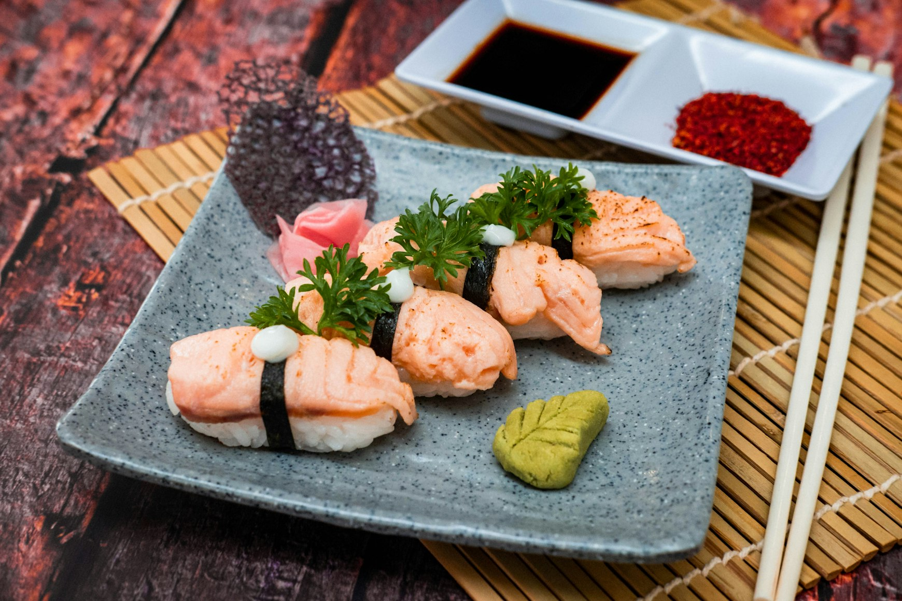
스시
초밥의 시작은 나레즈시(熱鮨, なれずし)라 불리는 요리로,
지금의 날생선을 밥 위에 얹어 먹는 초밥과는 전혀 다른 발효식품이었다.
나레즈시는 깨끗하게 닦은 생선에 소금을 뿌려 밥(이나 다른 찐 곡식)과
함께 돌로 눌러놓고 묵힌 것인데, 이렇게 하면 밥이 발효되면서 젖산이 나오면서 생선의 부패를 막아주며,
먹을 때는 젖산을 만들어내느라 탄수화물이 다 소모된 밥은 털어내고 생선만 반찬삼아 먹었다.
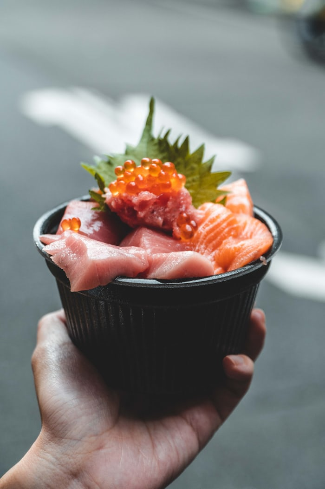
카이센동
유래는 딱히 명확하지 않다. 다만 몇가지 설이 있는데 홋카이도에서 즐겨먹던 향토 요리가 냉장 기술의 발전을 계기로 전국으로 퍼졌다는 설, 어부들이 해먹던 식사로 부터 퍼졌다는 설, 치라시즈시가 파생되는 과정에서 나온 요리라는 설 등이 있다.
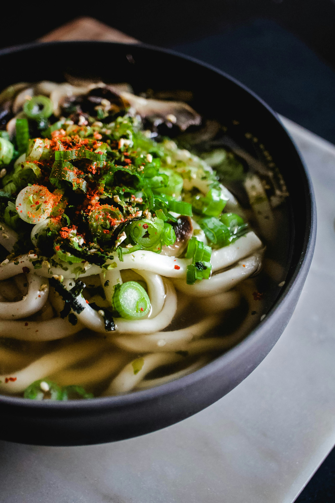
우동 우동은 중국의 면 요리에서 기원했다는 것이 통설이다. 일본 열도에서 면을 먹기 시작한 것은 나라 시대로, 이 시기 당나라에서 전래된 사쿠베이(索餅, さくべい)는 밀 반죽을 길게 늘여 국물에 삶아먹는 요리였다. 이 음식의 이름은 헤이안 시대에 국풍 문화의 영향으로 무기나와(麦縄, むぎなわ)라는 이름으로 번역되는데, 음식의 특성 그대로 밀(麦) 반죽을 밧줄(縄)처럼 길게 늘인 음식이라는 뜻이다. 이 무기나와에서 파생되어 칼로 썬 면을 뜻하는 키리무기(切り麦), 냉면을 가리키는 히야무기(冷や麦), 온면을 가리키는 아츠시무기(蒸し麦) 또는 아츠무기(あつ麦) 등이 생겨난다.
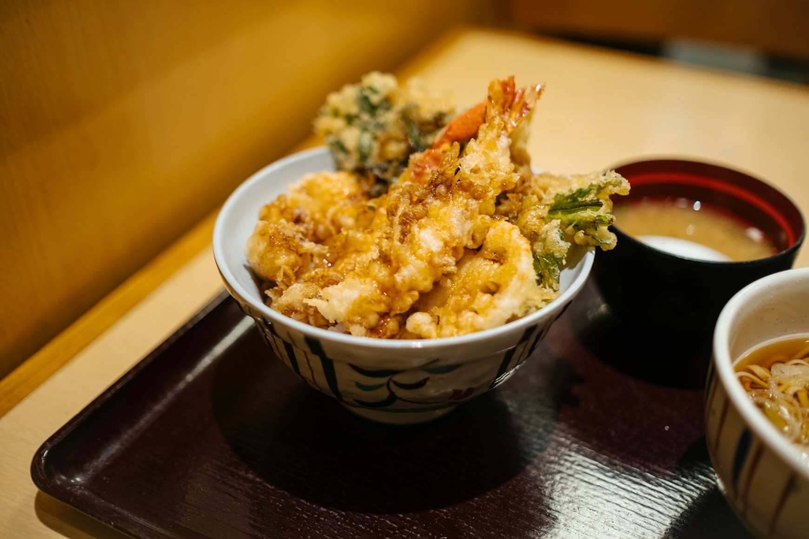
텐동 에도(도쿄)의 번화한 상업 중심지에서 길거리 음식이 유행했고,
튀김을 밥 위에 얹어 빠르게 먹을 수 있는 형태로 제공된 것이 초기 텐동의 모습이다.
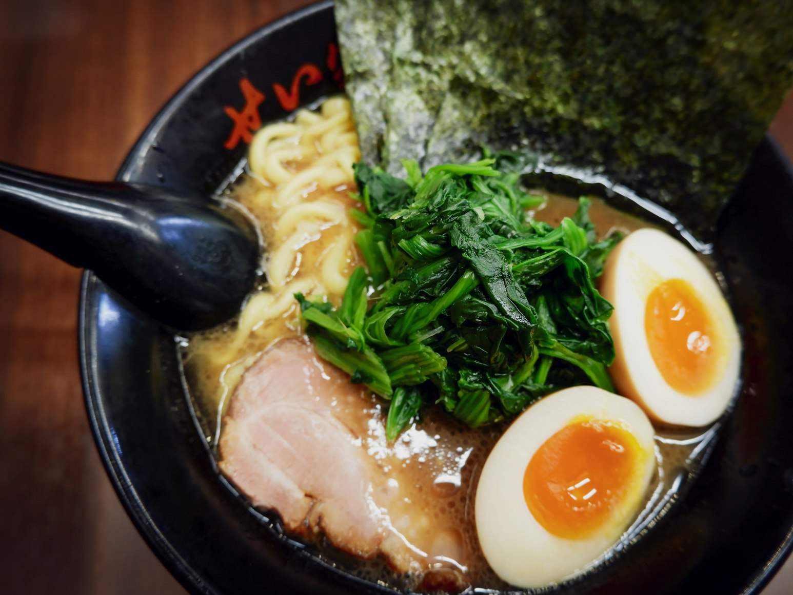
돈코츠라멘 오늘날 일본 라멘의 모태에 가까운 탕면 계열 라몐으로는 '란저우 라몐(兰州拉面[간]/蘭州拉麵[정])'이 있다. 오래 우려내서 기름진 육수를 사용하는 일본 라멘과는 달리 보통은 쇠고기 살코기 부분을 넣어 기름기가 일본 라멘보다 현저히 적고 맛도 일반적인 국수처럼 담백한 맛이다. 중국 특유의 매운 장인 라유(辣油, làyóu)로 간을 맞춰 먹기도 한다.[11] 오늘날의 일본 라멘은 이미 현지화를 많이 거쳐서 오히려 이런 라몐과는 뚜렷하게 구분되는 편이지만, 라멘의 기원에 그나마 가장 가까운 원형은 이 란저우 라몐에 남아 있다고 할 수 있다.
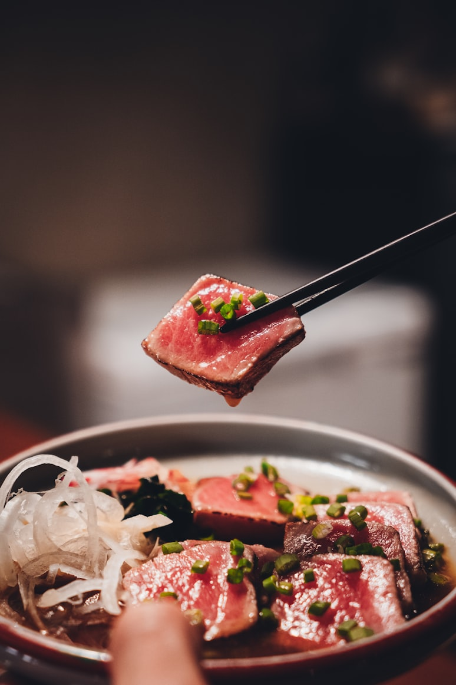
야끼니꾸 재일 한국-조선인 사회 및 그들과 교류가 많았던 일본인들로 인해 한국식 고기구이가 일본에 정착한 요리 문화이자 넓은 의미에서는 일본식 한국 요리로 불린다. 단어의 의미는 말 그대로 구이라는 의미의 야키(焼)와 고기라는 의미의 니쿠(肉)가 합해져 직역하면 '고기구이'이다. 일본은 육식금지령이 내려진 675년부터 1872년까지 육식을 하지 않아서 육식 문화가 발달되지 않았던지라 한국식 고기구이 요리가 '야키니쿠(구운 고기)'라는 이름으로 일본에 정착하게 되었다
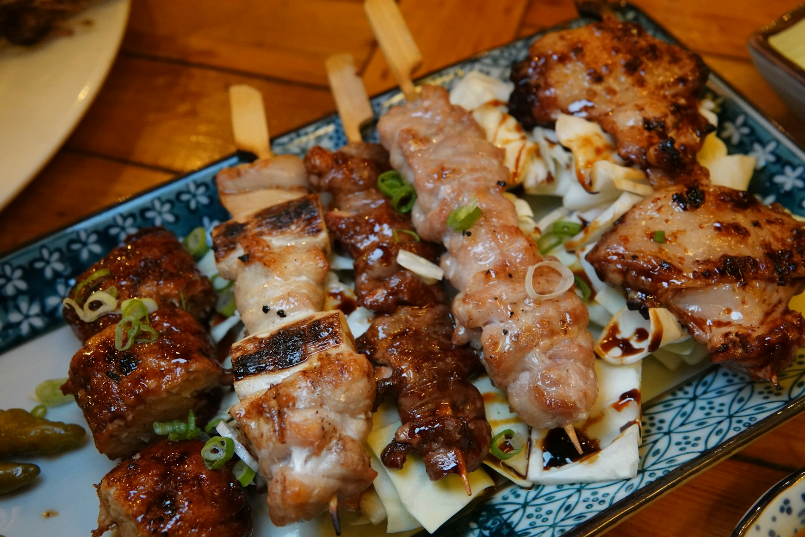
야끼토리 야키토리는 1867년 메이지 유신(明治維新) 이후 일본에 육식문화가 도입되면서 등장한 음식이다. 야키토리는 닭고기나 닭, 돼지, 소의 내장을 한입 크기로 잘라 꼬치에 꿰거나 파와 번갈아 꼬치에 꿰어 숯불에 약간 구운 후 소금을 뿌리거나 간장 소스에 적셔 다시 구워낸 요리이다. 야키토리가 처음 만들어질 당시에는 닭고기가 비싸서 상대적으로 저렴한 돼지고기, 말고기 등의 고기를 사용한 야키토리를 주로 먹었다.
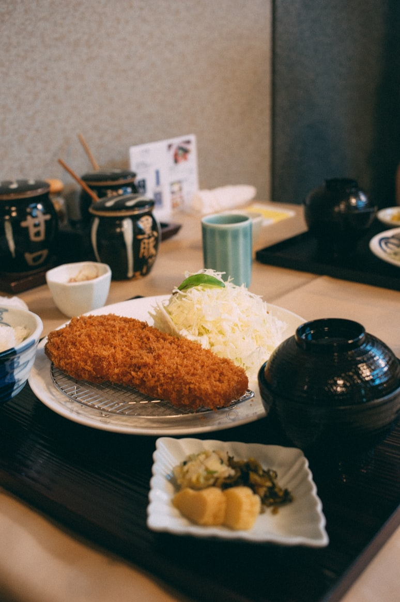
돈카츠 돈가스(톤카츠)라는 이름의 유래가 되는 '카츠레츠'(カツレツ)라는 표현은 영어 '커틀릿'에서 온 것으로 추정되지만, 그렇다고 해서 일본의 돈가스가 영국 커틀릿 문화와 똑같다고 단언하기는 어렵다. 예나 지금이나 영국에선 돼지고기 등심을 주로 폭찹으로 먹지[4] 커틀릿으로는 잘 해먹지 않기 때문이다. 따라서 돈가스는 근대 일본에서 커틀릿을 비롯한 유럽 풍의 양식을 상정하여 일식으로 재창조한 메뉴라고 할 수 있다.
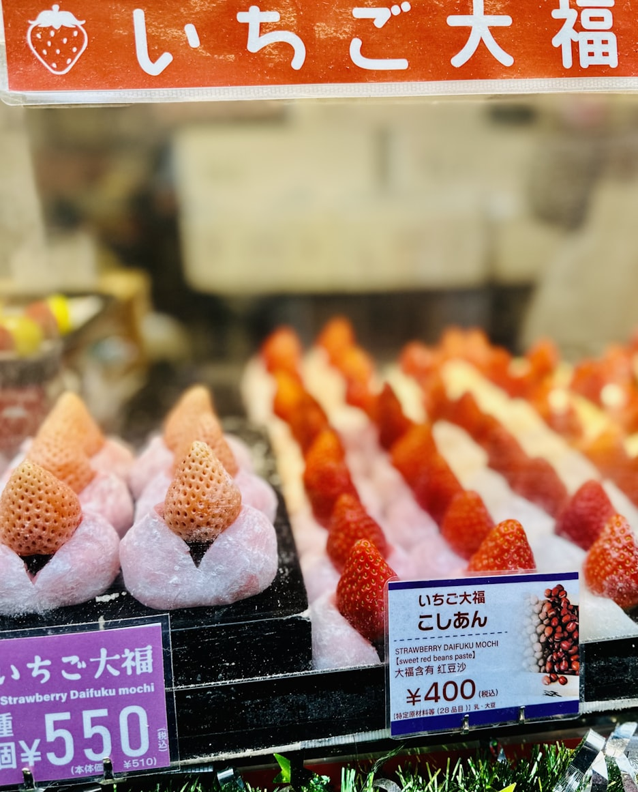
딸기모찌 모찌는 일본의 대표적인 떡으로 찐 찹쌀을 절구에 찧어 만든다. 모찌는 조몬시대(縄文時代, BC13000~BC300) 후기에 동남아시아로부터 벼농사와 함께 전해진 것으로 보인다. 이후 헤이안시대(平安時代, 794~1185)에 계절 행사 때마다 신불에 모찌가 올려지기 시작하면서 경사에 빠지지 않는 음식으로 자리잡았으며, 에도시대(江戸時代, 1603~1867)에 들어서 더욱 대중화되었다.
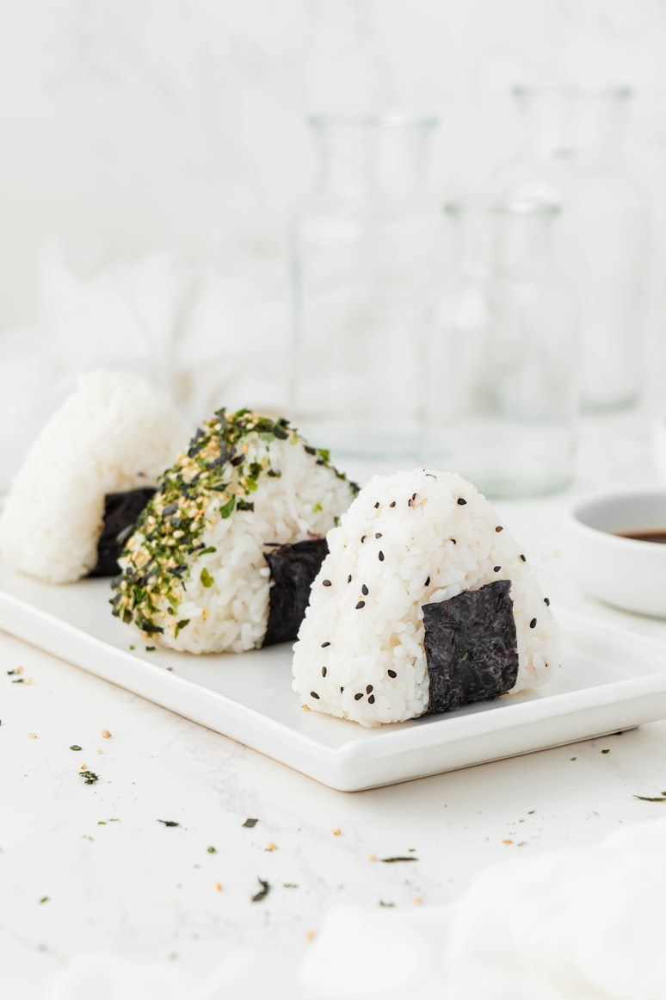
오니기리 옛 기록상으로 알 수 있는 대부분의 시기는 노동자나 군인에게 '밥을 뭉쳐 배식해줬다'는 정도로만 언급된다. 일본에서 주먹밥의 유래라고 언급되는 글의 앞뒤 맥락을 잘 보면 단순히 군인들이 평소에 쌀을 각자 가지고 다니다가 큰 솥에 다 함께 밥을 한 다음 배식할 때 1인 분량으로 뭉쳐서 배급했다는 이야기에 가깝다.
전투식량으로서의 주먹밥은 쌀, 물, 조미료, 솥, 불만 있다면 전투 후방에서도 빠르고 쉽게 만들 수 있었으며, 지급받은 군인도 한손으로 빨리 먹고 열량을 채워 전투에 참여가 가능했다. 더욱이 민간에서도 소금간을 하거나 된장을 바르고 열을 가해 구우면 보존성도 한층 강해지는 데다가 여기에 살균 효과가 있는 대나무잎으로 싸면 장거리 여행용 식사로도 이용할 수 있었다.
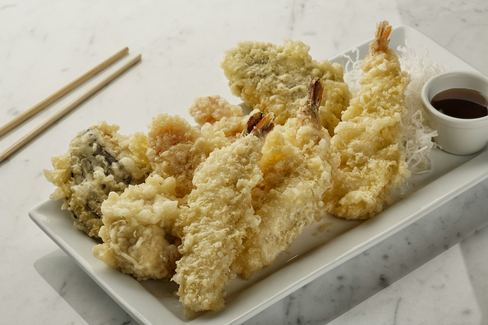
애비텐 에비텐의 유래는 19세기 후반으로 거슬러 올라가는데,당시 일본은 어업이 발달하였고 새우가 풍부하게 채집되었다.그중에서도 오사카와 도쿄는 새우 어업이 많았기 때문에 자연스레 밥위에 올려먹게 되었다.
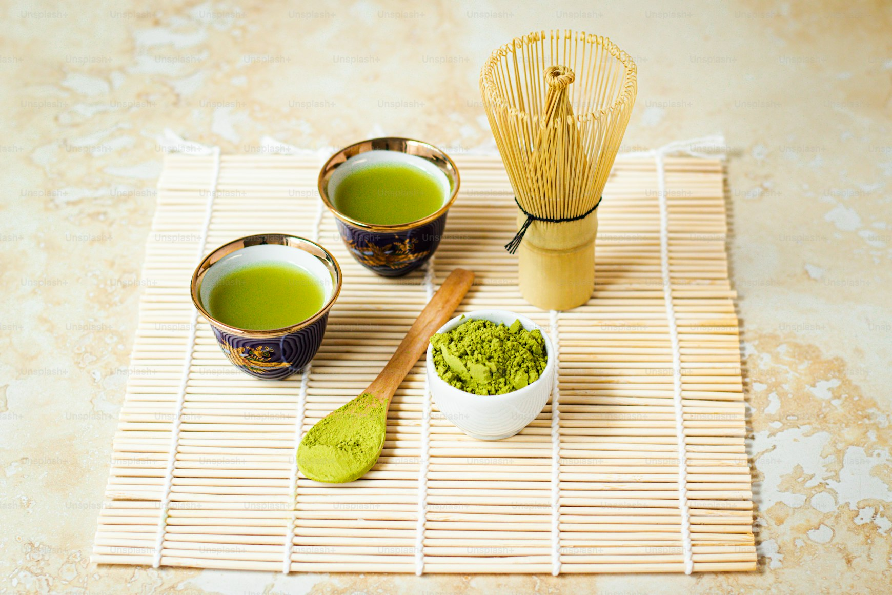
말차 일본에는 1191년 에이사이 선사가 남송에서 차열매와 말차 음용법을 도입해 가마쿠라 시대부터 재배가 시작되었다.
440년경 센노 리큐가 말차 우림과 마심 법을 양식화해 일본 다도를 집대성했고, 에도시대 초기 차음용의 90%가 말차였다.
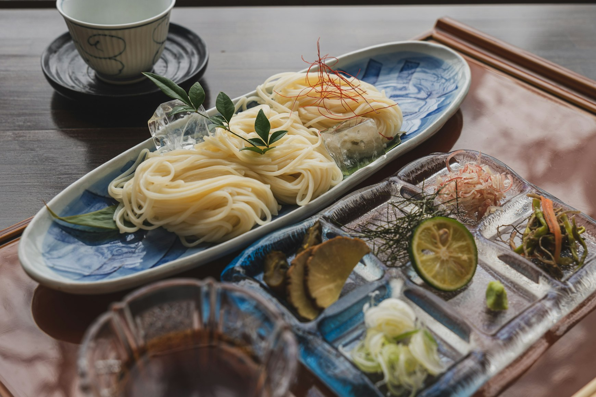
나가시 소멘 나가시 소멘은 1955년 미야자키현 다카치호에서 탄생한 것으로, 더운 여름철에 소면을 삶고 대나무와 다카치호협의 냉수를 사용하여 더위를 식힌것에서 유래되었다.